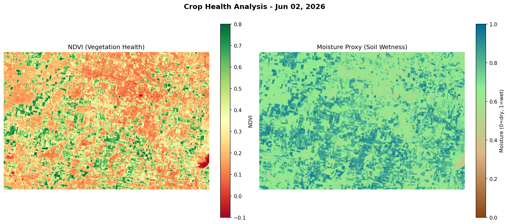
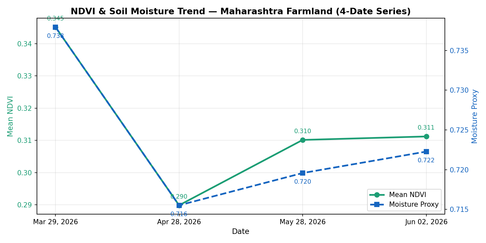
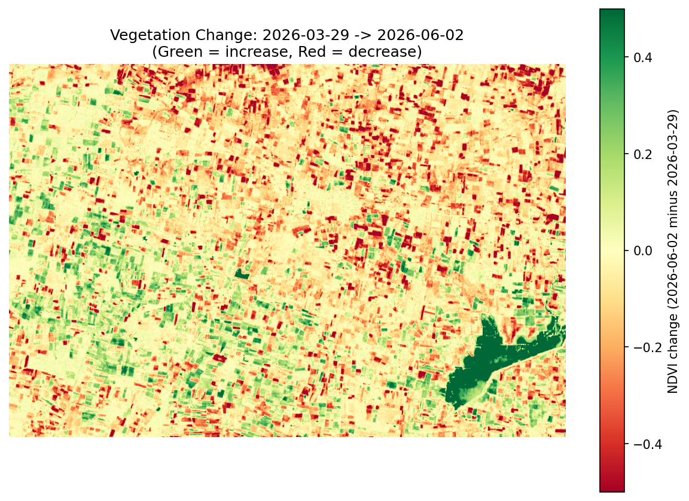
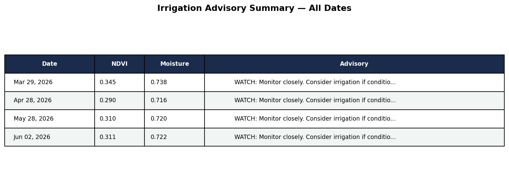

Avg NDVI
—
Vegetation Health
Moisture Index
—
Soil Wetness Proxy
Healthy Fields
—
NDVI > 0.5
Stressed Fields
—
NDVI 0 – 0.2
NDVI — Vegetation Health

Green = healthy vegetation | Red = bare/stressed
NDVI + Moisture Trend (4 Dates)

Green line = NDVI | Blue dashed = Moisture proxy
Vegetation Change Map (Mar 29 → Jun 02)
45.8% decreased · 19.8% increased
Green = vegetation increased | Red = vegetation decreased
Full Advisory Summary — All Dates

About This Project
Data Source
Sentinel-2 L2A satellite imagery (ESA Copernicus). Bands B04 (Red) and B08 (NIR) downloaded for 4 dates: Mar 29, Apr 28, May 28, Jun 02 2026.
Methodology
NDVI = (NIR−Red)/(NIR+Red) for vegetation health. Moisture Stress Index (MSI = Red/NIR) inverted as soil wetness proxy. Advisory logic combines both indices with growth-stage thresholds.
Irrigation Advisory Logic
NDVI < 0.25 + Moisture < 0.35 → Critical. NDVI < 0.35 + Moisture < 0.42 → Moderate stress. NDVI ≥ 0.35 + Moisture ≥ 0.42 → Healthy. Else → Watch.
Team Vikrama
Sanjivani College of Engineering, Kopargaon. Built for Agribusiness Hackathon 2026 (SPPU Research Park Foundation) and ISRO BAH 2026.